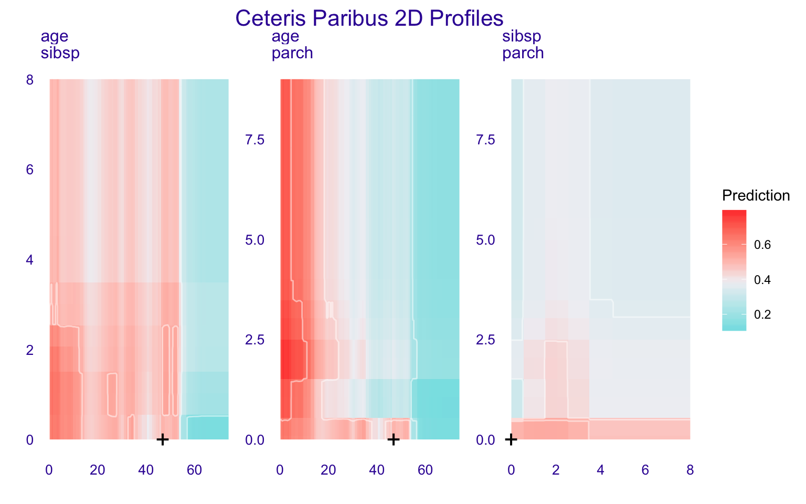

Chapter 5 Variable attribution for linear models
5.1 Introduction
In this chapter we introduce the concept and the intuitions underlying ‘’variable attribution,’’ i.e., the decomposition of the difference between the single-instance and the average model predictions among the different explanatory variables. We can think about the following examples:
- Assume that we are interested in predicting the risk of heart attack based on person’s age, sex, and smoking habits. A patient may want to know which factors have the highest impact on the his/her risk score.
- Consider a model for prediction of apartment prices. An investor may want to know how much of the predicted price may be attributed to, for instance, the location of an apartment.
- Consider a model for credit scoring. A customer may want to know if factors like gender, age, or number of children influence model predictions.
In each of those cases we want to attribute a part of the model prediction to a single explanatory variable. This can be done directly for linear models. Hence, in this chapter We focus on those models. The method can be easily extended to generalized linear models. Model-agnostic approaches will be presented in Chapters 6 and 8.
5.2 Intuition
Assume a classical linear model for response \(Y\) with \(p\) explanatory variables collected in the vector \(X = (X_1, X_2, \ldots, X_p)\) and coefficients \(\beta = (\beta_0, \beta_1, .., \beta_p)\), where \(\beta_0\) is the intercept. The prediction for \(Y\) at point \(X=x=(x_1, x_2, \ldots, x_p)\) is given by the expected value of \(Y\) conditional on \(X=x\). For a linear model, the expected value is given by the following linear combination:
\[ E_Y(Y | x) = f(x) = \beta_0 + x_1 \beta_1 + \ldots + x_p \beta_p. \] We are interested in the contribution of the \(i\)-th explanatory variable to model prediction \(f(x^*)\) for a single observation described by \(x^*\). In this case, the contribution is equal to \(x^*_i\beta_i\), because the \(i\)-th variable occurs only in this term. As it will become clear in the sequel, it is easier to interpret the variable’s contribution if \(x_i\) is is centered by subtracting a constant \(\hat x_i\) (usually, the mean of \(x_i\)). This leads the following, intuitive formula for the variable attribution: \[ v(f, x^*, i) = \beta_i (x_i^* - \hat x_i). \]
5.3 Method
We want to calculate \(v(f, x^*, i)\), which is the contribution of the \(i\)-th explanatory variable to the prediction of model \(f()\) at point \(x^*\). Assume that \(E_Y(Y | x^*) \approx f(x^*)\), where \(f(x^*)\) is the value of the model at \(x^*\). A possible approach to define \(v(f, x^*, i)\) is to measure how much the expected model response changes after conditioning on \(x_i^*\):
\[
v(f, x^*, i) = E_Y(Y | x^*) - E_{X_i}\{E_Y[Y | (x_1^*,\ldots,x_{i-1}^*,X_i,x_{i+1}^*,x_p^*)]\}\approx f(x^*) - E_{X_i}[f(x_{-i}^*)],
\]
where \(x_{-i}^*\) indicates that variable \(X_i\) in vector \(x_{-i}^*\) is treated as random. For the classical linear model, if the explanatory variables are independent, \(v(f, x^*, i)\) can be expressed as follows:
\[
v(f, x^*, i) = f(x^*) - E_{X_i}[f(x_{-i}^*)] = \beta_0 + x_1^* \beta_1 + \ldots + x_p^* \beta_p - E_{X_i}[\beta_0 + x_1^* \beta_1 + \ldots +\beta_i X_i \ldots + x_p^* \beta_p] = \beta_i[x^*_i - E_{X_i}(X_i)].
\]
In practice, given a dataset, the expected value of \(X_i\) can be estimated by the sample mean \(\bar x_i\). This leads to
\[
v(f, x^*, i) = \beta_i (x^*_i - \bar x_i).
\]
Note that the linear-model-based prediction may be re-expressed in the following way:
\[
f(x^*) = [\beta_0 + \bar x_1 \beta_1 + ... + \bar x_p \beta_p] + [(x_1^* - \bar x_1) \beta_1 + ... + (x_p^* - \bar x_p) \beta_p] \equiv [average \ prediction] + \sum_{j=1}^p v(f, x^*, j).
\]
Thus, the contributions of the explanatory variables are the differences between the model prediction for \(x^*\) and the average prediction.
** NOTE for careful readers **
Obviously, sample mean \(\bar x_i\) is an estimator of the expected value \(E_{X_i}(X_i)\), calculated using a dataset. For the sake of simplicity we do not emphasize these differences in the notation. Also, we ignore the fact that, in practice, we never know the model coefficients and we work with an estimated model.
Also, we assumed that the explanatory variables are independent, which may not be the case. We will return to this problem in Section [TOMASZ: INSERT REF], when we will discuss interactions.
5.4 Example: Wine quality
Figure 5.1 shows the relation between alcohol and wine quality, based on the wine dataset (Cortez et al. 2009). The linear model is \[ quality(alcohol) = 2.5820 + 0.3135 * alcohol. \] The weakest wine in the dataset has 8% of alcohol, while the average alcohol concentration is 10.51%. Thus, the contribution of alcohol to the model prediction for the weakest wine is \(0.3135 \cdot (8-10.51) = -0.786885\). This means that low concentration of alcohol for this wine (8%) decreses the predicted quality by \(-0.786885\).
Note, that it would be misleading to use \(x_i^*\beta_i = 0.3135*8 = 2.508\) as the alcohol contribution to the quality. The positive value of the product would not correrspond to the intuition that, in the presence of a positive relation, a smaller alcohol concentration should imply a lower quality of the wine.

Figure 5.1: (fig:attribution1)Relation between wine quality and concentration of alcohol assessed with linear model
5.5 Pros and Cons
The proposed definition of \(v(f, x^*, i)\) is linked neither with scale nor location of \(X_i\); hence, it is easier to understand than, for instance, the standardized value of \(\beta_i\). [TOMASZ: I AM NOT SURE ABOUT THIS ARGUMENT. THE DEFINITION OF v() INVOLVES CENTERING.] For the classical linear model, \(v(f, x^*, i)\) is not an approximation and it is directly linked with the structure of a model. An obvious diasadvantage is that the definition of \(v(f, x^*, i)\) is very much linear-model based. Also, it does not, in any way, reduce the model complexity; it only presents model coefficients in a different way. [TOMASZ: I AM NOT SURE ABOUT THIS ARGUMENT. MODEL COMPLEXITY IS WHAT IT IS. HOW CAN WE REDUCE IT?]
5.6 Code snippets
In this section, we present an example of computing variable attributions using the HR dataset (see Section 18.1 for more details).
To calculate variable attributions for a particular point, first we have got to define this point:
new_observation <- data.frame(gender = factor("male", levels = c("male", "female")),
age = 57.7,
hours = 42.3,
evaluation = 2,
salary = 2)Variable attributions for linear and generalized linear models may be directly extracted by applying the predict() function, with the argument type = "terms", to an object containing results of fitting of a model. To illustrate the approach for logistic regression, we build a logistic regression model for the binary variable status == "fired" and extract the estimated model coefficients:
library("DALEX")
model_fired <- glm(status == "fired" ~ ., data = HR, family = "binomial")
coef(model_fired)## (Intercept) gendermale age hours evaluation
## 5.737945729 -0.066803609 -0.001503314 -0.102021120 -0.425793369
## salary
## -0.015740080For the new observation, the predicted value of the logit of the probability of being fired is obtained by applying the predict() function:
## [1] 0.3858406On the other hand, variable attributions can be obtained by applying the predict() function with the type="terms" argument:
## gender age hours evaluation salary
## 1 -0.03361889 -0.02660691 0.7555555 0.5547197 0.007287334
## attr(,"constant")
## [1] -0.8714962The largest contributions to the prediction come from variables ‘’hours’’ and ‘’evaluation.’’ Variables ‘’gender’’ and ‘’age’’ slightly decrease the predicted value. The sum of the attributions is equal to
## [1] 1.257337The attribute constant of object var.attr provides the ‘’average’’ prediction, i.e., the predicted logit for an obsrvation defined by the means of the explanatory variables, as can be seen from the calculation below:
coef(model_fired)%*%c(1, mean((HR$gender=="male")), mean(HR$age), mean(HR$hours),
mean(HR$evaluation), mean(HR$salary))## [,1]
## [1,] -0.8714962Adding the ‘’average’’ prediction to the sum of the variable attributions results in the new-observation prediction:
## [1] 0.3858406Below we illustrate how to implement this approach with the DALEX package. Toward this end, functions explain() and single_prediction() can be used. Object model_fired stores the definition of the logistic-regression model used earlier in this section. The contents of object attribution correspond to the results obtained by using function predict().
library("DALEX")
explainer_fired <- explain(model_fired,
data = HR,
y = HR$status == "fired",
label = "fired")
(attribution <- single_prediction(explainer_fired, new_observation))## variable contribution variable_name variable_value
## 1 (Intercept) 0.363833312 Intercept 1
## hours + hours = 42.3 0.109221944 hours 42.3
## evaluation + evaluation = 2 0.134863451 evaluation 2
## salary + salary = 2 0.001751398 salary 2
## age + age = 57.7 -0.006343784 age 57.7
## gender + gender = male -0.008045314 gender male
## 11 final_prognosis 0.595281007
## cummulative sign position label
## 1 0.3638333 1 1 fired
## hours 0.4730553 1 2 fired
## evaluation 0.6079187 1 3 fired
## salary 0.6096701 1 4 fired
## age 0.6033263 -1 5 fired
## gender 0.5952810 -1 6 fired
## 11 0.5952810 X 7 firedAfter object attribution has been created, a plot presenting the variable attributions can be easily constructed:

References
Cortez, Paulo, António Cerdeira, Fernando Almeida, Telmo Matos, and José Reis. 2009. “Modeling Wine Preferences by Data Mining from Physicochemical Properties.” Decision Support Systems 47 (4): 547–53. https://doi.org/10.1016/j.dss.2009.05.016.